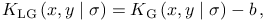
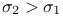
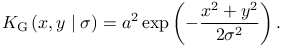
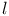
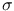
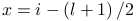

Lowered Gaussian filter
This filter was reported to perform well in DAOPHOT [2] and DAOSTORM [1] algorithms. The convolution kernel is based on the Gaussian kernel, which has been lowered to have the sum of all its entries equal to zero,
|  | (1) |
where  is the mean value of all of the elements in . The kernel size  and the standard deviation  are user-specified parameters.
Although the kernel is not separable, the filtered image can be obtained by subtracting two images filtered with two separable kernels,
|  | (2) |
Detector threshold formula
Refer to Threshold to see how filter results can be used to dynamically find threshold value.
Only the two default variables are provided by this filter:
| LowGauss.I | current unfiltered image |
| LowGauss.F | current filtered image |
References
- [1] (2011) DAOSTORM: an algorithm for high- density super-resolution microscopy, Nature Methods 8 (4), pp. 279–80. External Links: Document. Cited by: Lowered Gaussian filter.
- [2] (1987) DAOPHOT - A computer program for crowded-field stellar photometry, Publications of the Astronomical Society of the Pacific 99, pp. 191. External Links: Document. Cited by: Lowered Gaussian filter.
Generated by LaTeXML ![[LOGO]]()